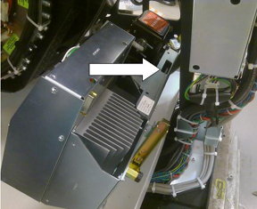

| NOTE: | If the frame of the old axial drive unit has a slot as shown in Illustration 9 then the hook can be attached to the slot and the strap is not necessary. Not all older motor drive assemblies have this slot available. |
Illustration 9: Potential Hoist Hook Slot
